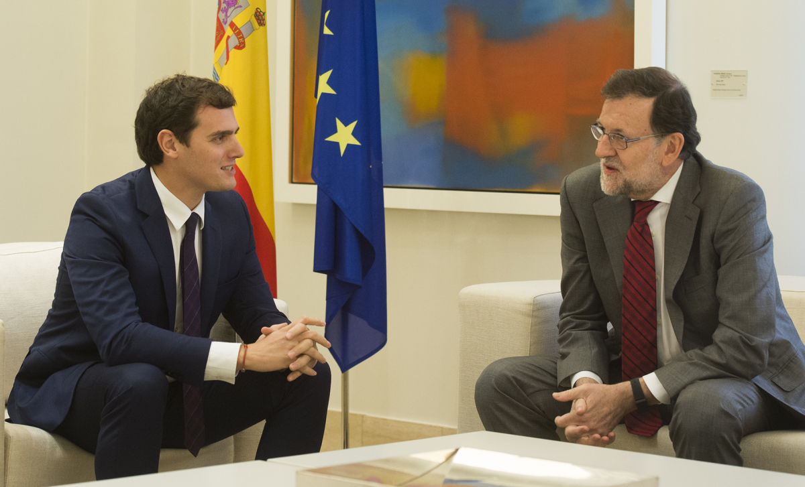

Mariano Rajoy y Albert Rivera acordaron ayer en una conversación telefónica que sendas delegaciones del PP y Ciudadanos busquen fórmulas que permitan la gobernabilidad y el inicio de la legislatura. Esas reuniones, según acordaron, solo comenzarán tras la segunda ronda de audiencias con el Rey, que se inicia mañana. Los 123 diputados populares y los 40 de Ciudadanos son insuficientes para formar Gobierno. Rivera, quien espera hablar en las próximas horas con el líder socialista, Pedro Sánchez, aspira a mediar entre PP y PSOE para que se forme un Ejecutivo en minoría que impulse una agenda reformista.Rivera recibió ayer un mensaje de Rajoy en el que el presidente del Gobierno en funciones le emplazaba a mantener una conversación, a lo que el líder de Ciudadanos respondió inmediatamente con una llamada. Como alternativa a un pacto del PSOE con Podemos, Rivera propone a socialistas y populares la formación de un Ejecutivo en minoría con el compromiso de cerrar amplios apoyos parlamentarios consensuados alrededor de un calendario de reformas que marque el ritmo de la legislatura. Rivera no entraría en ese Gabinete, según confirmó ayer. Si se cumpliera la hoja de ruta de Ciudadanos, los nombres del presidente y los ministros no se negociarían hasta el final, aunque el partido cree que la iniciativa debe ser del PP como ganador de las elecciones. El líder de Ciudadanos defendió en su conversación con Rajoy la necesidad de que en esta legislatura se aborden “las profundas reformas que necesita España”. Solo en ese caso pasaría Ciudadanos del voto negativo a la abstención en el pleno de investidura.Rivera ya tendió puentes entre las dos formaciones mayoritarias en las negociaciones para formar la Mesa del Congreso. Que Villegas y Miguel Ángel Gutiérrez encabezaran esas conversaciones con éxito para los intereses de Ciudadanos, que logró dos representantes en el organismo, hace que ahora ambos estén en la línea de salida para formar parte de los equipos que negocien con populares y socialistas, según fuentes de la ejecutiva del partido. De tener éxito su propuesta de mediación, Ciudadanos cree que lo último que habría que discutir es el nombre del presidente y de los miembros del Ejecutivo, aunque el PP tenga prioridad por haber sido la fuerza más votada. Rivera opina que Podemos no podría sumarse al pacto por sus propuestas económicas y su defensa de una consulta en Cataluña. Al tiempo, asegura que el Gobierno debería anteponer la aplicación de la hoja reformista acordada a la de su programa electoral. Y, finalmente, considera que esas reformas deberían tener cuatro pilares: defensa de la Constitución, del sistema de bienestar, la economía de mercado y Europa. “Hay gente que ve la situación actual como un problema. Yo quiero ver una oportunidad de hacer las reformas que nunca hicieron el PP y el PSOE”, opinó Rivera. “Si consiguiéramos apoyos muy amplios, es una oportunidad para un gran acuerdo que de pie a mejorar la Constitución”, sostuvo el líder de Ciudadanos, quien también querría consensuar la reforma de la ley electoral, de la de partidos o del modelo laboral; delimitar las competencias de las Comunidades e impulsar un pacto por la educación.
